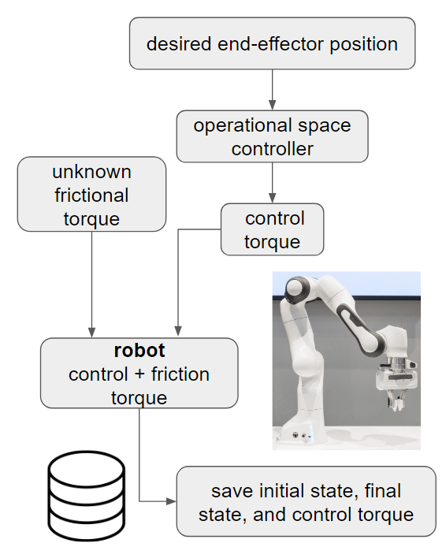
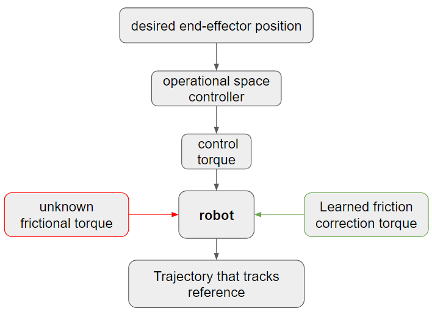
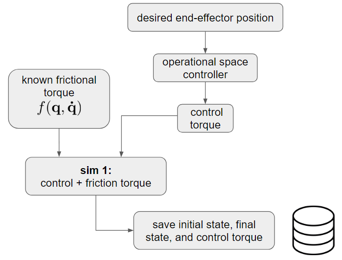
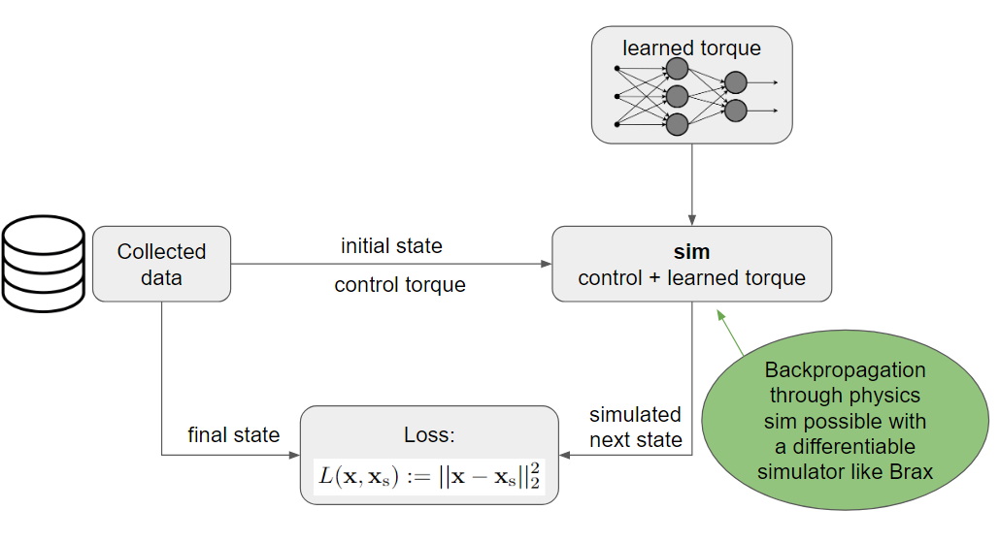
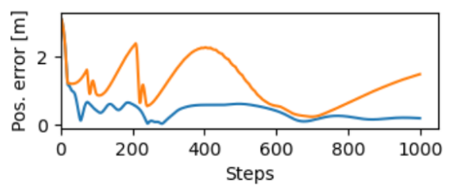
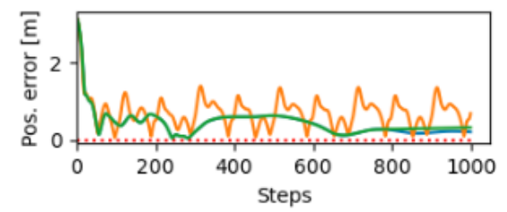

Here’s a method, based on differentiable simulators, to compensate for joint friction (or other unmodelled forces). This post is a proof of concept where I used Google’s Brax, a differentiable physics simulator based on Jax, to correct for unmodelled joint friction in a simple pendulum.
This was inspired by discussions with Ruihan Zhao aka Philip. Also, thanks you Jake Levy for with the help with Jax.
Table of Contents
Problem
Force controllers are helpful in situations when you want your robot to be compliant. For example, when you’re interested in contact-rich tasks or you are operating around humans. Unfortunately, they’re very sensitive to unmodelled forces, such as joint friction. These forces typically result in degradations in tracking performance. This is because there’s no way for the controller to tell whether it’s running into a wall (something it should be compliant to) or joint friction.
Challenges
This problem is challenging because joint friction depends on a ton of variables like:
- Temperature
- Angles
- Velocity
- Loads
- Joint degradation
One way of solving this problem is to come up with a super high-fidelity friction model for the robot you’re using. This approach works kinda well, but it’s typically bespoke and limited to a specific robot. We want something more general.
Approach
Three steps:
- Run a real robot and a simulated robot with no joint friction.
- Send the same commands to both robots and check the differences in states
- Train a neural network to output a torque that minimizes the difference between the states
Here’s a diagram to get some intuition for how this works:

In this post I’ll present a proof of concept where both robots are simulated, but one of them has an added friction force I came up with.
Data collection

We collect data using a simulated robot with an added friction force meant to represent a real robot with joint friction. We give the robot a random torque command, add friction to each of the joints, and then save the initial state, the final state, and the applied control torque. For this proof of concept, the robot is a single pendulum.
Training the neural network
Once data is collected, I trained a neural network to correct for friction.
I used a multi-layer perceptron with 4 hidden layers and 256 neurons each.
The input layer of the neural network takes in normalized joint positions and velocities from the initial state. 1
Training is done as follows:
- Sample a tuple from the dataset. Each data tuple contains an initial state, control torque, and a final state.
- Using the initial state, initialize a robot in a simulator (with no friction).
- Apply the control torque and the neural network torque to the robot.
- Compute the loss function by comparing the difference between the final state (from the data) and the resulting state in the simulation
Reducing loss by adjusting the network parameters essentially means that the networks is learning to imitate the effects of friction. So, once the network is trained, if we apply the negative of the learned torque, we should counteract the effects of friction.
In the diagram below, I also note why it’s important that we use a differentiable simulator. In order to propagate loss into changes of the neural network parameters we need to be able to differentiate the simulated state with respect to the neural network parameters. This can only be done with a differentiable simulator, as noted in the diagram below.

Results
Before
Here’s a plot showing position error for the end effectors. I use a simple PD controller since the dynamical system is very simple. Using the same controller, the orange and blue lines show trajectories with and without friction, respectively. As expected, the controller without friction has less error.

After
Below are the trajectories I got when combining the PD controller and the neural network. Green denotes the corrected trajectory. Notice how it does such a good job that it almost exactly cancels out the effects of friction, leaving us with a trajectory that almost perfectly overlaps the no-friction trajectory (blue line).

Conclusion
This idea looks promising but I still need to figure out the following:
Coverage. A pendulum is a very simple dynamical system, so covering the entire state space when collecting data was very easy. I just sampled random initial positions for the pendulum and random inputs, and since the robot only has a single joint, I quickly covered the entire state space. However, for robots with more joints, the state space will be exponentially larger, and getting good coverage will likely be challenging.
Architecture. As the dynamical system gets more complex, we will likely need a better neural network model.
Sim2real. It remains to be shown whether this will transfer to a real robot. Friction depends on joint temperature which typically changes as you operate the robot. This time-dependence may interfere with the data collection and/or learning process.
Safety. Adding an extra torque that’s “blind” to contact may violate safety limitations and remove some of the benefits of force control.
Code
Link to the GitHub repo. Take a look at the scripts folder and/or contact me if you have any questions.
Footnotes
-
Normalization is done using averages and standard deviations from the collected dataset. ↩